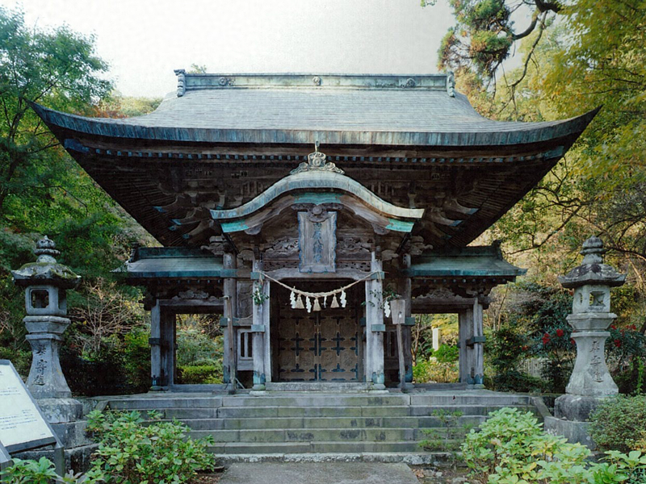

柞原八幡宮（Yusuhara-hatiman-gū）

住所
〒870-0808
大分県大分市大字八幡987
旧国名
豊後国一宮
御祭神
応神天皇・仲哀天皇・神功皇后
柞原八幡宮について
天長4年（827）に宇佐神宮から勧請（かんじょう）を受けたと伝えられる古社で、御祭神に応神天皇・仲哀天皇・神功皇后を祀っています。
古くは戦いの神として崇敬を集めていました。本殿をはじめ10棟の建築物、6点の宝物が国指定の重要文化財に指定されています。
鬱蒼とした杉林の広い境内には、朱塗りの回廊（かいろう）を持つ江戸中期に建てられた壮麗な本殿があり、数少ない八幡造りの建築物として知られています。
参道途中には天然記念物の樹齢約3千年の御神木の楠があるほか、大友氏の時代にポルトガル人が植えたと伝えられる「ホルトの木」があります。
お祭り
『仲秋祭』・・9月14日から20日に行われる神事で「浜の市」と称されます。14日氏子の奏する渡り拍子の中を、
神輿3基がお旅所の仮宮に渡御（とぎょ）し、中日には「放生会（ほうじょうえ）」の神事が行われ、期間中には神楽の奉納や花火大会などが行われます。
起源は大友能直（おおともよしなお）が豊後守護となった鎌倉時代初期まで遡れるといわれています。